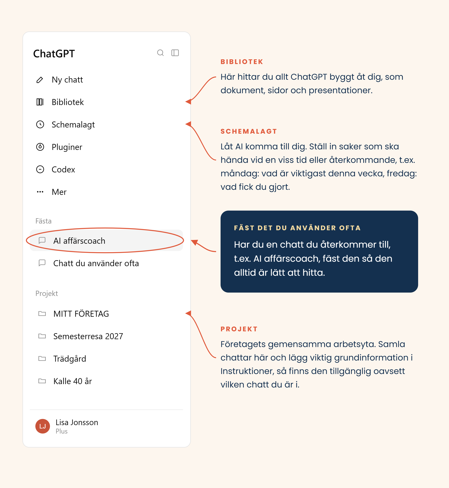
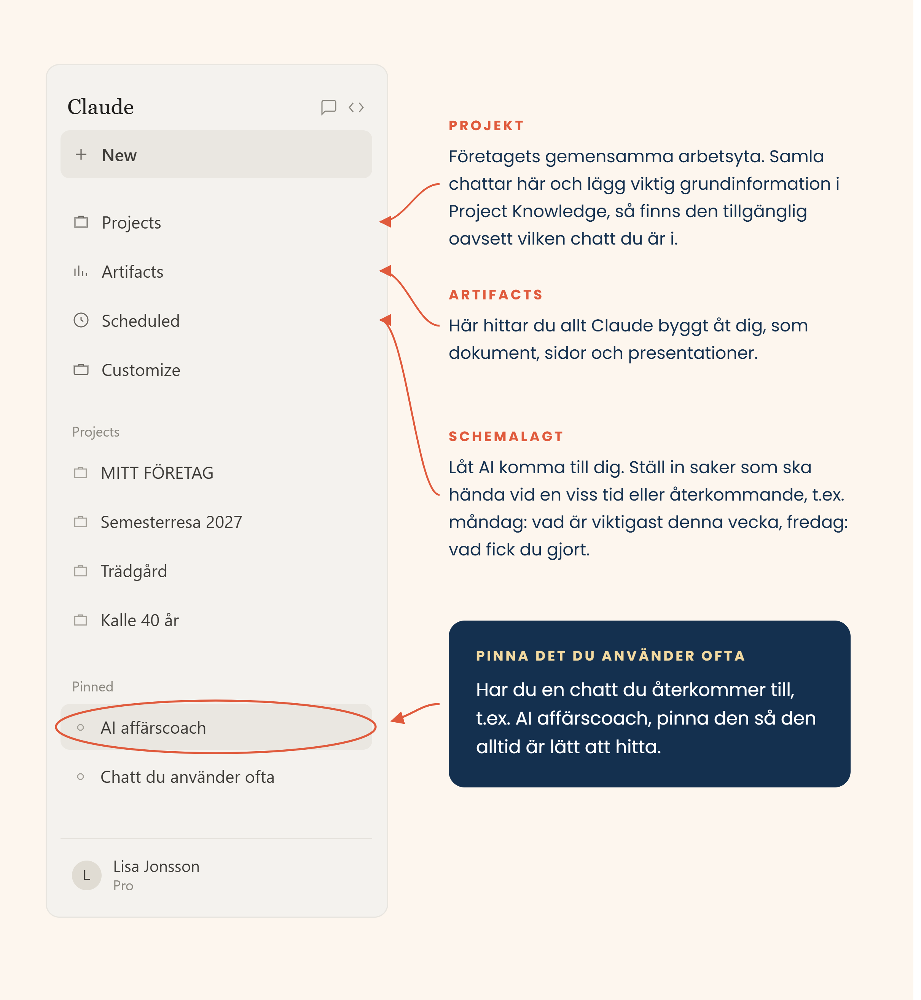

En enkel guide för dig som driver eller startar företag. AI handlar inte bara om att hinna mer — med rätt kunskap kan det bli både bättre resultat och roligare att göra jobbet.
Du behöver inte läsa allt. Börja med det du behöver just nu — klicka dig direkt till exempelvis hemsida, budget, kundmejl eller din AI-affärscoach, och kom tillbaka till resten när du behöver det.
Prata eller skriv precis som du tänker. Du får gärna babbla, börja mitt i eller vara ostrukturerad — AI hjälper dig att sortera.
Håll inte med bara för att svaret låter bra. Ifrågasätt, säg emot, tryck på de svaga punkterna — det är i diskussionen det faktiskt blir bra, inte i det första svaret.
Kontrollera fakta, siffror och sådant som är viktigt innan du använder det. Det räcker som första AI-introduktion.
Mitt tips. Tänk högt — det är ofta mycket snabbare än att försöka formulera allt perfekt från början. Jag använder till exempel gärna ChatGPT för att prata in på svenska (klickar på dikteramikrofonen), och kopierar sedan texten till Claude om jag vill jobba vidare där (Claude är sämre på att förstå svenskt tal, men går utmärkt i text).
En "prompt" är bara det du skriver till AI:n — frågan eller instruktionen du skriver i rutan. Inget märkvärdigare än så. En bra prompt innehåller ofta fyra saker:
Och den viktigaste lektionen av alla — fortsätt prata: "Kortare." · "Jag gillar inte rubriken, ge mig fem alternativ." · "Mer som jag själv pratar." · "Det där känns för säljigt." · "Behåll första stycket men skriv om resten." Det är nästan viktigare än den perfekta första prompten.
Fungerar också för att lära dig något nytt, inte bara skriva: "Jag förstår inte det här: [begrepp]. Förklara enklare, och ställ frågor till mig efteråt för att kontrollera att jag hänger med."
Inte 25 AI-verktyg — bara de du faktiskt behöver. Allt annat längre ner på sidan är fördjupning du kan spara till senare.
Min erfarenhet. ChatGPT tycker jag är väldigt bra på att fånga min tonalitet och fungerar som en bred AI-kollega i många olika typer av arbete. Claude upplever jag ofta som mer strukturerat, och använder mycket när jag vill bygga, strukturera eller arbeta fram något mer omfattande.
Ingen är "rätt" för allt — och båda utvecklas hela tiden. Vill du känna skillnaden själv: prova samma sak i båda, t.ex. "Här är min startsidetext. Vad är otydligt, och hur skulle du förbättra den?"
Fungerar lika bra om du inte startat än som om du redan är igång och vill se på verksamheten med nya ögon. Använd AI som ett kritiskt bollplank — inte en som bara håller med.
"Jag funderar på att [beskriv idén]. Vilka antaganden gör jag som jag borde ifrågasätta? Vilka andra löser redan det här problemet, och vad gör jag annorlunda?"
"Här är vad jag vill erbjuda och till vem: [beskriv]. Utmana mig — vad är otydligt, vad saknas, och vad skulle en skeptisk kund fråga?"
Handlar det mer om att hålla riktningen vecka för vecka än om att testa själva idén? Se din AI-affärscoach under Jobba smartare.
Vill du se hela bilden av vad som brukar behöva tänkas igenom, från idé till att företaget rullar? Den ligger som en checklista längst ner på sidan.
Lite mer tekniskt än resten av guiden, men värt det: det här är exakt så den här sidan — och min egen hemsida headofpassion.se — är byggda. Fyra steg, förklarade från grunden.
Innan du går den här vägen: Claude kan redan bygga saker direkt i chatten, utan Code eller GitHub. Be Claude bygga något konkret (en sida, ett dokument, en presentation) och det öppnas i ett eget fönster bredvid chatten — kallas Artifacts. Klicka dela-ikonen uppe i fönstret för en egen länk du kan skicka till vem som helst, ingen mottagare behöver konto. Bra för att snabbt dela något du byggt. Uppdaterar du innehållet och publicerar på nytt gäller det på samma länk. Vill du ha en egen, mer permanent hemsida med eget domännamn — som den här guiden — är resten av det här avsnittet nästa steg.
Du chattar med Claude och beskriver vad hemsidan ska innehålla — färger, sektioner, vad texten ska säga. Claude bygger en visuell skiss du kan klicka runt i direkt, som en riktig sida, innan något är på riktigt.
"Bygg en enkel hemsida för min frisörsalong, med bokningsknapp, priser och bilder på lokalen.""gör rubriken större", "byt till varmare färger" — och se resultatet direkt.Ingen kod, inga tekniska ord — bara ett samtal där du beskriver och ser resultatet direkt, tills det ser ut som du vill. Precis den här guiden är byggd på det här sättet.
Du kan redan dela och exportera skissen från Claude Design. Vill du istället ha en egen, permanent webbplats med eget domännamn och full kontroll över koden — det som varje webbsida faktiskt består av — skriver och sparar Claude Code den riktiga koden åt dig.
/design-sync — den hämtar skissen från Claude Design och bygger den som riktig kod. Inget att ladda ner eller ladda upp för hand.Du behöver inte kunna programmera. Du fortsätter bara beskriva vad du vill ha — skillnaden är att det som byggs nu är riktiga filer på en egen, permanent webbadress, istället för en skiss i Claude Design.
GitHub är ett gratis, säkert "skåp" för kod — varje ändring sparas med tidsstämpel, så man alltid kan gå tillbaka om något går fel. GitHub Pages är en inbyggd, gratis funktion som gör samma filer till en riktig, publik hemsida. Båda ingår i samma konto — inget separat webbhotell behövs.
github.com.Det sista steget kostar inget extra och kräver inget nytt konto någon annanstans — hemsidan bor på samma ställe som koden.
Den här vägen kräver lite mer tålamod än att bara jobba i Claude Design. I gengäld äger du hela hemsidan själv, utan månadsavgift till ett webbyggarverktyg — bara en dator och ett gratis GitHub-konto.
Känns stegen krångliga att ta själv? Det här är precis den typen av sak jag hjälper till med i min rådgivning. Boka en kostnadsfri rådgivningstimme via Timbanken →
Vill du ha det ännu enklare? Webbhotell som Loopia och One.com har egna inbyggda AI-verktyg för att bygga hemsida (Loopias "Sitebuilder med AI" respektive One.coms "Aida") — allt på ett och samma ställe: domän, hosting och hemsida. Ett snäpp enklare än vägen ovan. Jag har själv fått bättre resultat med Claude, men testa gärna själv och se vad som passar dig.
Vill du bygga en app istället för en hemsida? Det svenska verktyget Lovable är byggt för det — beskriv appen i text på samma sätt som ovan, mer tekniskt än Claude Design men valfritt att testa.
Många provar AI och tänker efteråt "det här låter så AI". Oftast beror det inte på verktyget — utan på att det aldrig fått lära sig hur du själv vill låta.
Skriv inte bara "skriv personligt och varmt" — ge AI:n riktiga exempel. Ta 3–5 texter du själv skrivit och tycker känns som dig: mejl, LinkedIn-inlägg, hemsidetexter, vad som helst.
Lägg tonalitetsguiden i projektet "Mitt företag" — inte bara i minnet. Då vet du exakt vilken instruktion AI:n jobbar utifrån, varje gång.
Genväg: många verktyg har även anpassade instruktioner i inställningarna (ofta under "Anpassa" eller "Vad ska AI:n veta om dig") — text som gäller i alla samtal, t.ex. "Skriv alltid varmt och personligt, korta meningar, undvik säljjargong." Bra som snabbstart, men för viktiga företagstexter är en nedskriven guide i projektet säkrare än att lita på inställningen.
Testa gratistjänsterna först — de är bra. Midjourney blir intressant den dag estetiken är affärskritisk.
Tre olika saker, lätt att blanda ihop: generera en helt ny person (bilden liknar ingen verklig person) · använda ett foto som referens (behåller ditt ansikte, byter t.ex. miljö) · redigera ett befintligt foto (samma bild, en detalj ändrad). Var tydlig med vilket du vill ha.
OpenAI lade ner Sora-appen i april 2026 — bygg inte din video där.
Tre nivåer, börja på den lägsta: Enkelt — AI skriver manus till en video du själv spelar in. Nästa steg — AI gör textning, klippning och rätt format. Mer avancerat — AI skapar hela videoklipp, en avatar eller voice-over (som HeyGen-exemplet nedan).
Ett riktigt exempel: en annons jag gjorde i HeyGen 2025. Då kopplade jag på ElevenLabs röstjänst istället för HeyGens egen röst, som inte var tillräckligt bra då — det kan såklart ha ändrats sedan dess.
Mata in din grafiska profil, färger, typsnitt och logotyp — det är där skillnaden mot den generiska AI-looken uppstår. Arbetet kan också ske direkt i PowerPoint: Copilot, ChatGPT och Claude har alla tillägg där, och Gemini gör samma sak i Google Slides.
Problemet är sällan att skriva själva inlägget. Problemet är att veta vad man ska skriva om.
Exempel i Claude Design: "Gör en Instagram-karusell med fem bilder utifrån den här texten. Håll samma visuella stil som min hemsida. Första bilden ska fånga uppmärksamheten, därefter en tanke per bild och en enkel avslutning." Eller: "Skapa ett visuellt LinkedIn-inlägg utifrån den här statistiken. Det ska kännas professionellt och mänskligt, inte som en generisk AI-grafik."
Det här är precis den sortens sak du kan använda dagen efter ett rådgivningsmöte.
AI kan hjälpa dig förstå och räkna på olika scenarier — men skatt, juridik och bokföring bör du alltid stämma av med rätt expert.
"Jag vill ha [X] kr kvar i egen plånbok, jobbar [X] timmar/vecka och har [X] kr i kostnader. Vad borde jag ta i timpris?""Vad brukar [din yrkesroll] i Sverige ta i timpris? Ge mig en ungefärlig spridning, inte en exakt siffra, och säg till om du är osäker — jag vet att du inte har färsk marknadsdata."Har du redan ett kalkylark? Dra in det i chatten och be AI:n läsa igenom det, förklara siffrorna i vanligt språk, eller testa olika scenarier: "Vad händer med resultatet om jag säljer 10, 20 eller 30 i månaden istället?"
Ett färdigt kalkylark, samma jag själv använder och anpassar i rådgivningssamtal. Räknar per tjänst/produkt (kostnad + kundpris), antal sålda per månad, löpande kostnader, resultat och en likviditetsrad som visar vad som byggs upp "på bankkontot" månad för månad. Fungerar lika bra för timpris som för paket — lägg bara till en rad per produkt du säljer.
Den delar jag som en egen kopia efter ett samtal, så den blir rätt anpassad direkt. Boka en kostnadsfri rådgivningstimme →
Fyra olika profiler, och alla kan gräva djupare än ett vanligt svar. Det är därför svaret beror på uppgiften — inte på vilket som är "bäst". Källa på verktygsjämförelsen: oberoende recensioner och tester, augusti 2026.
Djupresearch: AI:n läser flera källor själv och redovisar dem, ungefär som att be en praktikant googla åt dig i en kvart. Bra när du behöver undersöka marknad, konkurrenter, priser, branschtrender eller regler: välj forskningsläge i verktyget, skriv din fråga, vänta — och läs källhänvisningarna innan du litar på dem.
Det bredaste utbudet, och det verktyg de flesta i din omgivning redan använder. Bild, röst och research i samma fönster.
Kvaliteten varierar mellan svaren. Jag upplever ibland ChatGPT som lite mer benägen att hålla med — be gärna om motargument. Viktiga svar bör du ändå alltid kolla upp en extra gång.
chatgpt.com och skapa konto med mejl eller Google-konto."skapa en bild av …" — eller klicka gem-ikonen för att ladda upp en fil att utgå från.Tänk på det som ett mycket kunnigt bollplank du chattar med i ett vanligt textfält — du skriver en fråga eller uppgift, det svarar direkt. Den breda användningen gör det till ett tryggt förstahandsval om du är helt ny på AI.
Byggd för arbetsuppgifter. Starkast på text och kod, och enklast att bygga egna agenter i.
Använder du den mycket tar kvoten slut under dagen. Har inte samma traditionella bildgenerering som ChatGPT och Gemini — men kan bygga diagram, grafik och interaktiva visualiseringar i kod.
claude.ai och skapa konto."Nytt samtal" och skriv eller klistra in din text.Fungerar som ChatGPT rent tekniskt, men är extra bra på att jobba med dokument du redan har — dra in en fil så läser den innehållet direkt, istället för att du klistrar in text för hand.
Finns där arbetet redan sker: mejlen, Teams, Excel. Säkerhet och styrning byggd för företag.
Flera olika produkter bär samma namn — lite svårt att veta var man ska vara.
copilot.microsoft.com och logga in med jobbkontot."sammanfatta den här tråden" markerat i Outlook.Istället för ett eget fönster dyker Copilot upp som en liten ikon inuti programmen ni redan använder — du behöver inte byta verktyg för att fråga den något.
Tekniskt i toppskiktet och generös gratisnivå. NotebookLM gör research direkt i dina egna dokument.
Sortimentet är spretigt. Det tar en stund att lära sig var man gör vad.
gemini.google.com, logga in med Google-kontot.notebooklm.google.com och ladda upp filerna du vill fråga om.Fungerar bäst ihop med Google-tjänster ni redan har (Gmail, Docs, Kalender) — och NotebookLM-delen är särskilt bra på att svara på frågor om dokument du själv laddar upp.
Mer om varför jag själv utgår från ChatGPT och Claude, och hur de känns olika i praktiken, under Min utgångspunkt.
Låt AI bli mer än ett chattfönster du öppnar ibland. Här är hur du samlar företagets AI-arbete i ett projekt, sätter upp en AI-affärscoach, låter AI komma till dig av sig själv, och får hjälp med möten, avtal och struktur.
I både ChatGPT och Claude kan du arbeta i "projekt". Tänk ungefär som en mapp — men en smartare sådan: allt du lägger in i projektet (dokument, tidigare samtal, anteckningar) finns kvar som sammanhang varje gång du pratar med AI:n där. Du slipper börja varje samtal med "jag heter [ditt namn], jag driver…" — ju bättre AI:n förstår verksamheten, desto bättre bollplank blir den. Öppna en ny chatt för varje ämne du vill prata om — de delar samma kunskap om företaget, så AI:n har hela bilden oavsett vilken chatt du är i.

Så hänger det ihop i ChatGPT: chattarna i projektet MITT FÖRETAG känner till varandra, Schemalagt påminner dig, och du kan fästa en chatt du använder ofta.

Så hänger det ihop i Claude: ett projekt samlar företaget, Artifacts sparar det Claude bygger, Scheduled påminner dig, och du kan pinna en chatt du använder ofta.
I projektet "Mitt företag" lägger du grunderna — affärsplan, målgrupp, erbjudande, mål och viktiga dokument. Öppna sen en egen chatt för varje ämne, t.ex.: Marknadsföring — hemsidetexter, sociala medier, annonser, tonalitet och bilder. · Försäljning — kundgrupper, mejl, offerter och idéer för hur du hittar kunder. · Ekonomi — budget, priser och olika kalkyler. · Affärscoach — din AI affärscoach, se hur den sätts upp i avsnittet nedan. Alla chattar ser samma grunddokument, oavsett ämne.
Skillnad mellan verktygen: I ChatGPT kan chattar referera till varandra automatiskt — med vanligt "Default memory" (standardläget) gäller det till och med hela ditt konto, inte bara samma projekt. Väljer du "Project-only memory" när du skapar ett projekt blir det istället isolerat. I Claude: lägg viktig grundinformation om företaget i projektets Knowledge, så vet du att den finns som gemensam bas för alla chattar i projektet. Claude har också eget projektminne och kan bygga vidare på sådant ni arbetat med tidigare där, och på betalplan kan Claude dessutom söka tillbaka i tidigare projektchattar.
Som egenföretagare ska du ofta vara vd, strateg, ekonom, marknadsförare, säljare, administratör och projektledare på samma gång — och sällan finns det en kollega bredvid att fråga "vad missar jag?". AI kan inte fatta besluten åt dig, men den kan hjälpa dig tänka, prioritera och faktiskt komma vidare.
Coachens instruktion klistras in som första meddelandet i en egen chatt — inte i projektets Instructions. Instructions gäller nämligen alla chattar i projektet, och då skulle Marknadsföring och Ekonomi också bli coachande frågor istället för vanlig hjälp.
Samma text funkar i både ChatGPT och Claude — bara sättet du klistrar in den (se "Så gör du" ovan) skiljer sig något.
Ju mer coachen förstår om företaget, desto bättre blir hjälpen. Du behöver inte fylla i allt från början — börja med: Vad säljer du? Till vem? Var står verksamheten idag? Vad vill du framför allt åstadkomma? Resten fyller coachen på med efter hand, genom att fråga.
Måste jag komma ihåg det själv? Nej — helt manuellt fungerar coachen lika bra, men du kan också låta AI påminna dig av sig själv. Se "Låt AI komma till dig" nedan.
Blir chatten för lång efter ett tag? Be AI:n sammanfatta allt viktigt: "Sammanfatta det viktigaste vi kommit fram till, så jag kan ta med det till en ny chatt." Klistra in svaret som första meddelandet i den nya chatten — samma trick fungerar i alla chattar som växer sig långa, inte bara coachen.
Berätta vad som pågår, så hjälper AI:n dig landa i det som faktiskt är viktigast.
Inte ett helt samtal varje dag — en kort avstämning som går mot handling, inte ännu en reflektion.
Prata eller skriv in vad som hänt och be om en ärlig återblick — bra för att lyfta blicken från själva görandet.
AI blir bättre som bollplank ju mer kontinuerligt du använder det. Den stora vinsten kommer sällan från det perfekta enskilda promptet, utan från att AI:n över tid får förstå ditt företag, dina mål, dina utmaningar och hur du jobbar — istället för att börja om från noll i varje samtal. Håll det i samma projekt (mer om det ovan) så byggs det sammanhanget upp av sig självt.
Du behöver inte alltid komma ihåg att öppna AI och fråga. ChatGPT har schemalagda uppgifter även på gratisnivån. I Claude finns Scheduled Tasks på betalplanerna via Cowork. AI kan antingen påminna dig om något du vill göra — eller själv utföra en återkommande uppgift åt dig.
Tänk på sådant du gör eller behöver komma ihåg varje vecka eller månad. Finns det något AI skulle kunna hjälpa dig med?
"Utifrån det du vet om mig och mitt företag — finns det något du tycker jag borde schemalägga eller låta dig hjälpa mig med återkommande?"
Mitt tips: Börja inte med tio schemalagda uppgifter. Måndag + fredag med din AI affärscoach är en väldigt bra start. Lägg sedan till fler först när du märker att de faktiskt skulle avlasta dig.
Här finns massor som sparar enormt mycket tid, men som få tänker på att fråga AI om.
Mötesagenda · Förbereda frågor inför ett möte · Sammanfatta anteckningar · Göra en att-göra-lista · Skriva mötesuppföljning · Skapa checklistor · Göra arbetsinstruktioner · Sortera långa dokument.
"Här är mina anteckningar från dagens möte: [klistra in]. Sammanfatta besluten och gör en att-göra-lista med ansvarig person för varje punkt."Inte AI, men de löser vardagsproblem de flesta nya företagare stöter på — och hör hemma här, i verktygslådan för att jobba smartare.
Svenska språket och GDPR gör valet enklare när du hanterar kunduppgifter.
Ingen har koll på allt samtidigt när man startar eller driver eget. Nu har du sett hur AI kan hjälpa till i olika delar — här är en helhetsbild över det som brukar behöva tänkas igenom. Bocka av i din egen takt, det sparas i den här webbläsaren så det finns kvar nästa gång du är här.
Jag kommer fortsätta utveckla och uppdatera den här sidan. Skriv gärna om något kändes otydligt, saknades, eller om du önskar en guide till något jag inte tagit upp.